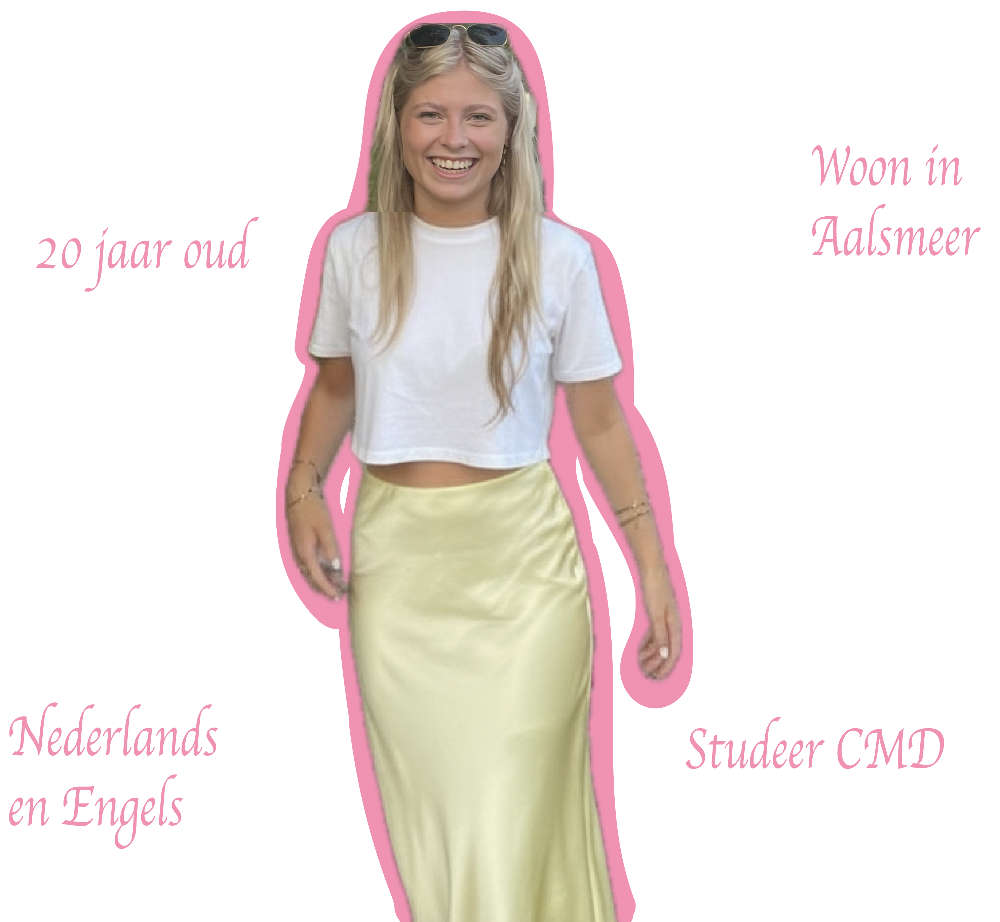
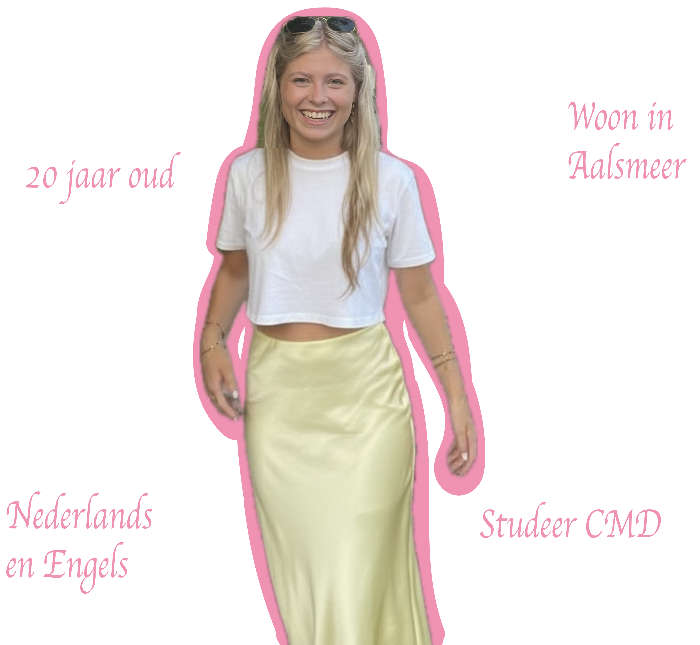
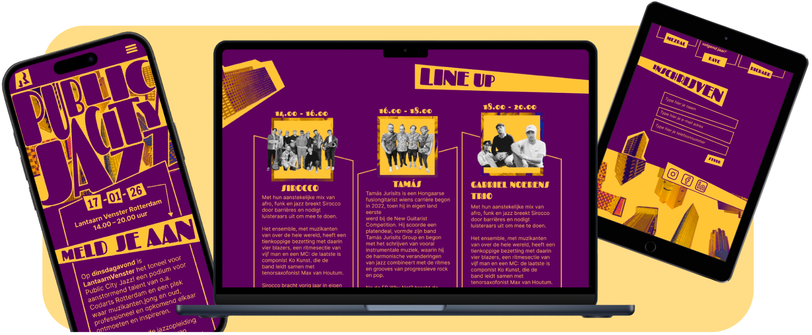
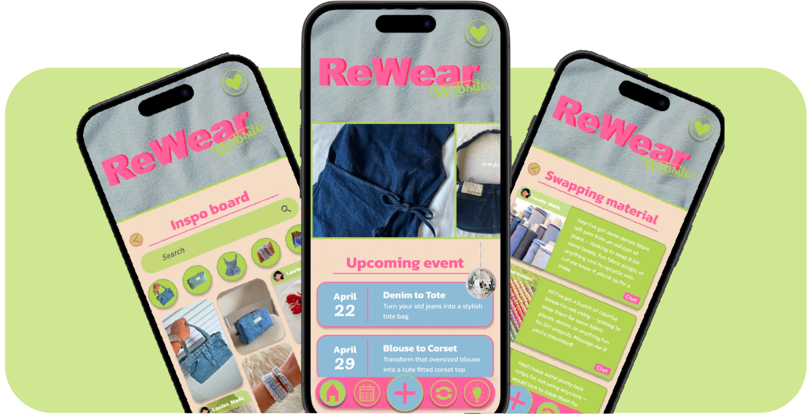
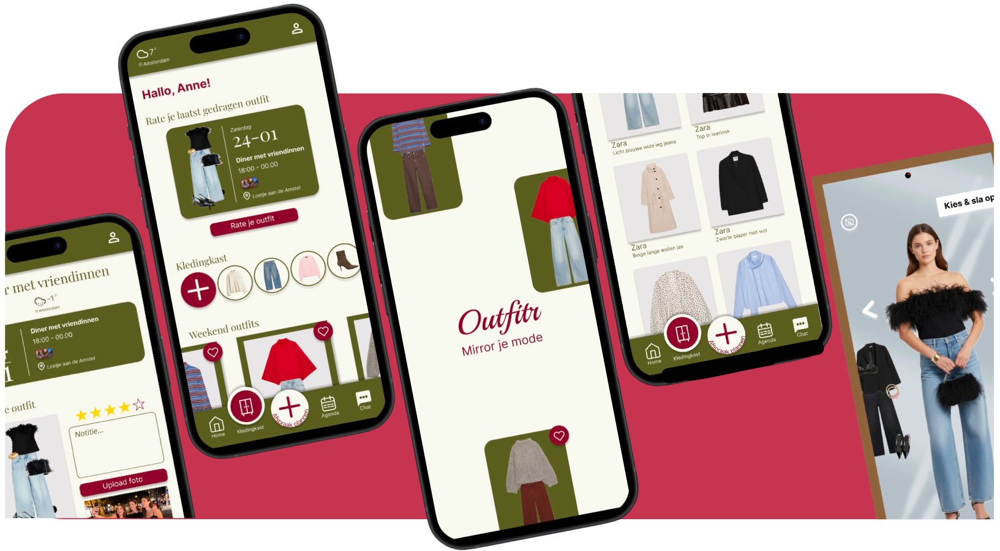
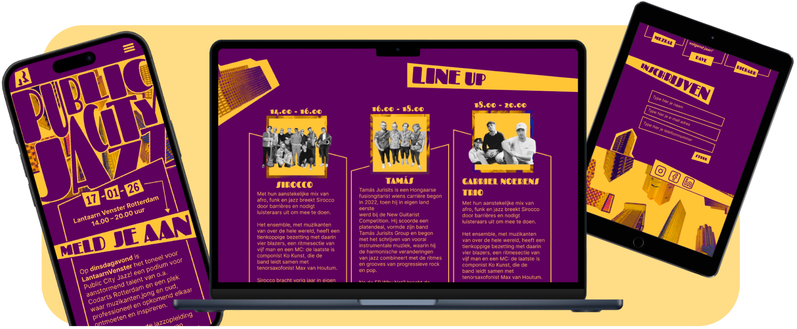
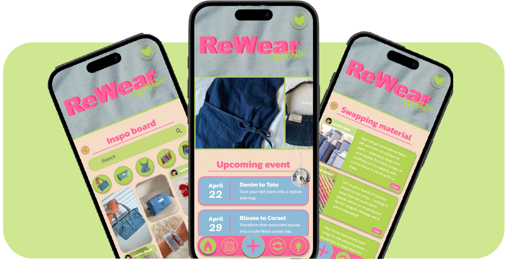
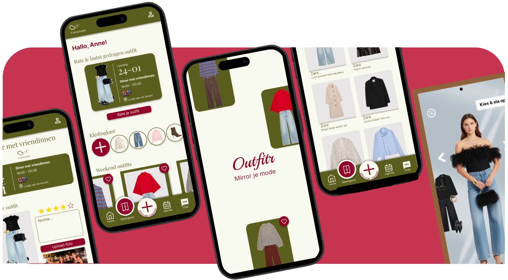

Hallo,
ik ben Anne
Ik ben 20 jaar en tweedejaarsstudent Communicatie en Multimedia Design. Met veel plezier werk ik aan projecten rond UX- en UI-design, prototyping, webdesign en visual design. Ik vind het leuk om creatieve ideeën om te zetten in gebruiksvriendelijke én visueel sterke ontwerpen.
Lees meer over mijWerk waar ik trots op ben
 




